Streak mark 24 variations on one idea: a cell per day, one accent for today.
Every caption carries the same mark at 24px, which is where most of these get decided.
01 BaseThe mark you picked, unchanged. Everything here is measured against it.02 Denser, 36More days in the same frame. Reads as texture before it reads as days.03 Four weeksSeven across, so the rows are actual weeks. Wide, not square.
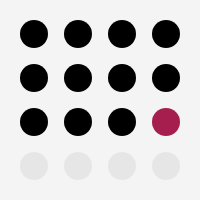
04 Sixteen, largeFewest cells, biggest dots. The version that survives a favicon.05 Full monthThirty five cells. Honest to the dashboard, busy as a mark.
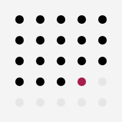
06 AirySame grid, more space between days. Calmer, weaker at small sizes.07 Rounded cellsSquares with the card radius. Closer to the board, further from a chart.
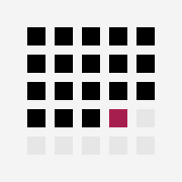
08 Hard squaresNo radius anywhere. The most engineered of the set.
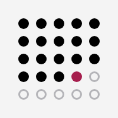
09 Hollow futureThe days ahead are outlines. The grid stays legible without filling in.
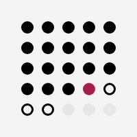
10 Three statesPosted, publishing, scheduled, empty. The whole queue in one mark.
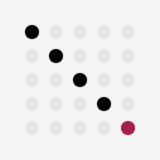
11 Diagonal runThe streak crosses the field instead of filling it. Prettiest, least true.
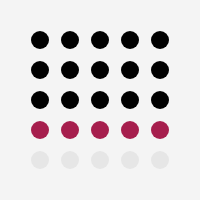
12 This weekOne row in accent. Reads as a week rather than a day.
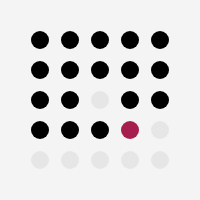
13 Broken streakOne day missed, in the middle. Honest, and a strange thing to put on a logo.
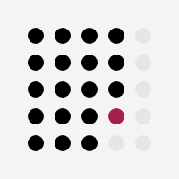
14 Filled by columnThe run reads top to bottom. Same data, a board rather than a calendar.15 Today, largeScale carries today instead of colour. Breaks the grid on purpose.16 Today, ringedA ring around the current day. One more part to lose at 16px.
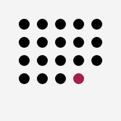
17 Ragged edgeThe days ahead are not drawn at all. Strongest silhouette in the set.
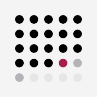
18 Scheduled aheadGrey for what is already queued. Says the board is not empty.
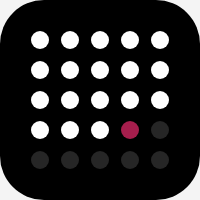
19 Dark tileApp icon. The empty days are a tint of the tile, not a hole in it.
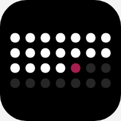
20 Dark tile, weeksSeven across on ink. Reads as a calendar at a glance.
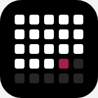
21 Dark tile, cellsRounded cells on ink. Closest to the board it comes from.
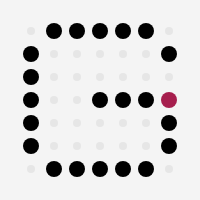
22 G of daysThe grid spells the letter. Carries the name and the cadence at once.
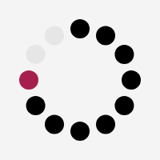
23 Ring of daysTwelve days around a circle. Sits well in a round avatar crop.24 Disc of daysThe grid cropped to a circle, whole cells only. A mark, not a chart.